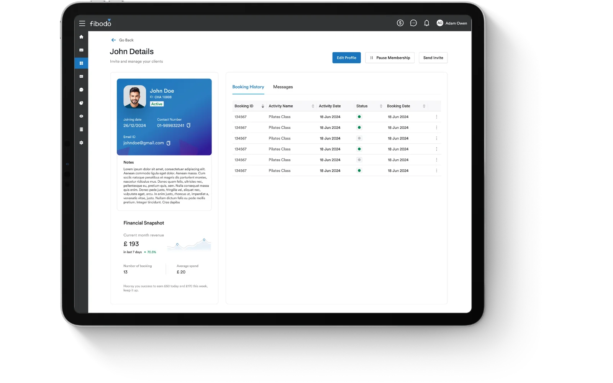

Running an experience-led business means balancing people, space, schedules, revenue and service quality — often across disconnected tools that don't talk to each other.
fibodo replaces fragmentation with a single operational system that gives operators clarity across the entire experience lifecycle.

Typical operator challenges
- Multiple tools for bookings, payments, staff and reporting
- Limited visibility into utilisation and capacity
- High admin overhead and manual work
- Difficulty scaling without losing control
How fibodo supports operators
fibodo connects:
- Bookings & attendance — across classes, sessions, programmes and events
- Payments & memberships — with clear revenue visibility
- Staff & schedules — aligned to real availability
- Reporting & utilisation — so decisions are data-led, not instinct-led
All in one system. No stitching required.
Outcomes operators see
- Fewer tools, lower overhead
- Better use of space and staff
- Clearer performance insight
- A system that scales without re-platforming